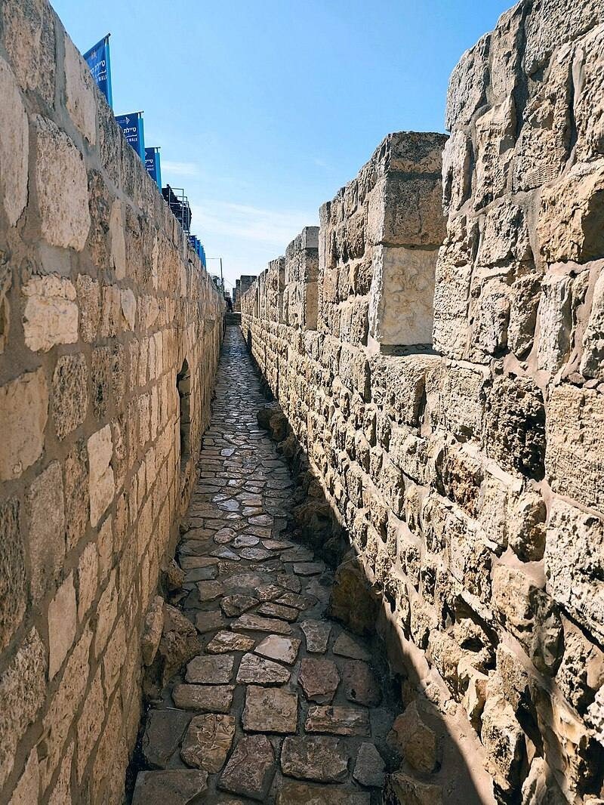

טיילת החומות, ירושלים · מצגת התמונות הרשמיתמאפיינים ושיווק · נושא 1
התיירות לישראל עולה ויורדת בגלל גורמים שרובם מחוץ לשליטת הענף: מלחמות, כלכלה, מחירים, טיסות ואירועים. בנושא הזה לומדים לזהות את הגורמים, ולהסביר איך כל אחד משפיע.
תמונה כללית
הספר מונה את הגורמים שמשפיעים על היקף התיירות הנכנסת ועל תיירות הפנים. בבגרות שואלים "ציינו שלוש סיבות".
גורם 1
המצב המדיני והביטחוני באזור, והיחסים בין המדינות. תייר מחפש ביטחון ושקט בחופשה, ולכן אי־שקט ביעד הוא סיבה שכיחה לבטל חופשה, לא להזמין חדשה, ולתת ליעד דימוי של "מקום מסוכן".
משך המשבר חשוב לא פחות מחומרתו. חופשה מתוכננת חודשים מראש, וככל שאי־הוודאות נמשכת, קשה יותר להחזיר את התיירים.
המושג "גיאופוליטי" (מושג 13) כבר נלמד:ירושלים 2 · כשהמצב הביטחוני קובע מי מגיע
גורם 1 · המשך
חשבו שישראל אינה מקום בטוח (סקר 1999, לפי הספר).
חשבו שישראל בטוחה. כלומר, הפחד נובע בעיקר מהתדמית בחו"ל, ולא מהחוויה בפועל.
אילת "בלי ישראל" כבר נלמדה:הנגב 5 · אילת "בלי ישראל", ומיתוג
גורם 1 · אזהרות מסע
אזהרת מסע היא הודעה רשמית שמדינה מפרסמת לאזרחיה, כשיש סכנה ביעד מסוים: מלחמה, טרור, מגפה, אסון טבע (רעידת אדמה, צונאמי, התפרצות געש) או פגיעה סביבתית. יש לה כמה דרגות.
מדינות בעולם מזהירות את אזרחיהן מלהגיע לישראל. תיירים שבאים להנאה לא רוצים לסכן את חייהם, ובלי אזהרה בתוקף גם הביטוח שלהם לא מכסה.
כשישראל מפרסמת אזהרת מסע ליעד מסוים (באתר המטה לביטחון לאומי), פחות ישראלים טסים אליו. כלומר אזהרה מצמצמת את התיירות היוצאת לאותו יעד (בגרות 2024).
ברוב המקרים האזהרה היא המלצה, ואין איסור לנסוע. יש תרבויות שמקפידות עליה מאוד, ויש שפחות (מחוון 2022).
"הודעה" ו"אזהרה" (מושגים 14–15) כבר נלמדו:ירושלים 2 · מושגי הביטחון
המלחמה 2023–2024 · בגרות 2024
התיירות הנכנסת נפגעה עוד יותר: אזהרות מסע, ביטולי טיסות של חברות זרות, וביטוח שלא מכסה (מחוון 2024).
המלחמה · בגרות 2025
בנובמבר 2024 דווח שכחמישית מהמלונות בישראל על סף סגירה. ירושלים ונצרת נפגעו במיוחד, כי הן נשענות על תיירות נכנסת, ובעיקר על צליינים נוצרים, שהפסיקו להגיע בגלל המלחמה, הטילים וביטולי הטיסות.
בבגרות 2025 ביקשו נותני שירות בלי שמות של אתרים. כותבים סוג של עסק, לא שם של מקום.
הסיבה שכולם נפגעים: המכפיל התיירותי. הכסף של התייר מתחלק בין עסקים רבים, ולכן כשהתייר לא בא, כולם מפסידים. אותו מנגנון עובד גם הפוך: תיירות פנים בגולן אחרי הפסקת האש החזירה הכנסה למחלבות, ליקבים, לצימרים ולמסעדות.
כבר נלמד:ירושלים 1 · מה מעלה ומה מורידהגליל 3 · כשהצליינים לא מגיעיםהגולן 3 · המכפיל בגולן
גורמים 3 ו־7
כשהמשבר נגמר, מי שדחה את הנסיעה רוצה לנסוע. אחרי הקורונה נוצר ביקוש גדול (מחוון 2022).
בשנים 2014–2017 התיירות מסין לישראל גדלה מאוד. הגורמים שהשפיעו (בעקבות הדמיה 2018):
הקלה באשרה פותחת שוק חדש. החמרה, למשל בגלל תיירים שנשארים לעבוד בלי היתר, פוגעת גם בתיירים אמיתיים (ספר).
גורם 5 · בגרות 2023, 2026
משווים רק חבילות זהות: אותה רמת מלון, אותה עונה, אותו מספר לילות ואותו בסיס אירוח (לינה וארוחת בוקר, חצי פנסיון או פנסיון מלא).
הספר משווה בין אילת לאיים הקנריים: מרחק הטיסה לא מסביר את הפער. ההבדל הגדול הוא במחיר סידורי הקרקע: מלון, ארוחות והעברות.
רגישות למחיר: תייר נופש מחליף יעד בקלות. צליין או תייר עם מניע היסטורי פחות רגיש, כי אין לו תחליף.
מחירי אילת מול מצרים וטורקיה נלמדו:הנגב 5 · תחרות ומחירים
גורם 5 · בגרות 2026
מהנשאלים בסקר שהופיע בבגרות 2026 חשבו שהתמורה לכסף בחופשה בישראל נמוכה או נמוכה מאוד. כלומר, חופשה בארץ נתפסת כלא משתלמת.
כשהמחיר יורד בזכות הגדלת ההיצע, זה קשור לחוק ההיצע והביקוש. נלמד אותו בנושא 8.
גורמים 8–9
תיירות אינה "תעשייה נקייה": מלונות וכבישים פוגעים בנוף, בטבע ובתושבים. תיירות בת קיימא היא פיתוח ושימור של אתרים בלי לפגוע בסביבה, כך שאפשר יהיה להמשיך להשתמש בהם לאורך זמן. משל הספר: מי שהורס את הטבע שמושך את התיירים, מנסר את הענף שהוא יושב עליו.נשאל בבגרות 2023 · לא במיקוד 2026
ביקורת הגבולות, נהג האוטובוס, פקיד הקבלה במלון ואפילו האזרח ברחוב: כולם חלק מהמוצר. תייר מרוצה חוזר וממליץ, ותייר מאוכזב פוגע בתדמית.
כושר נשיאה (מושג 22) ותיירות בת קיימא נלמדו:ים המלח 1 · איך קולטים עוד תיירים בלי להרוס
גורם 10 · אירועים
תיירות נכנסת ומטבע חוץ, מקומות עבודה, מנוף לעסקי התיירות, ושיפור התדמית: המבקרים רואים את ישראל בעיניים, וממליצים לחברים ולמשפחה.
הוא ראה באירוע מנוף לתיירות נכנסת. הקליפ הציג את תל אביב כ"עיר ללא הפסקה": חופים וחיי לילה. המסר: באים לאירוויזיון, ונשארים ליהנות מהעיר (מחוון 2019).
אירוע־על (מושג 16) כבר נלמד:ירושלים 1הנגב 4 · מיס יוניברסים המלח 3 · האופרה במצדה
גורם 10 · בגרות 2026
מסע אופניים תחרותי שנערך על הכבישים, ביוזמה מקומית. הוא אינו בהכרח אירוע־על, אבל משפיע על התיירות באזור.
ובשאלה הזאת נשאל גם כושר נשיאה: כמה רוכבים וצופים האזור יכול לקלוט, בלי לפגוע באתר ובחוויה.
למה כל זה חשוב
ייצוא סמוי, מכפיל ותגלית (מושגים 2, 6, 7) נלמדו:ירושלים 2 · מה מרוויחה המדינה מצליין
כשהתיירות הנכנסת יורדת
כשתיירים מחו"ל לא מגיעים, תיירות הפנים משאירה את הכסף במשק ושומרת על מקומות העבודה. לישראל יש יתרון: מגוון נופים ואקלים בשטח קטן, אתרים רבים, וקשר רגשי של התושבים לארץ.
משרד התיירות, עמותות תיירות אזוריות, התאחדות המלונות, רשויות מקומיות וועדי עובדים.
תרגול מהיר · בסטודיו
שאלות פתוחות ומושגים · עונים בסטודיו
שאלות מבגרויות · עונים בסטודיו
שאלות מבגרויות · עונים בסטודיו
סיכום
בנושא הבא: תיירות עסקים.